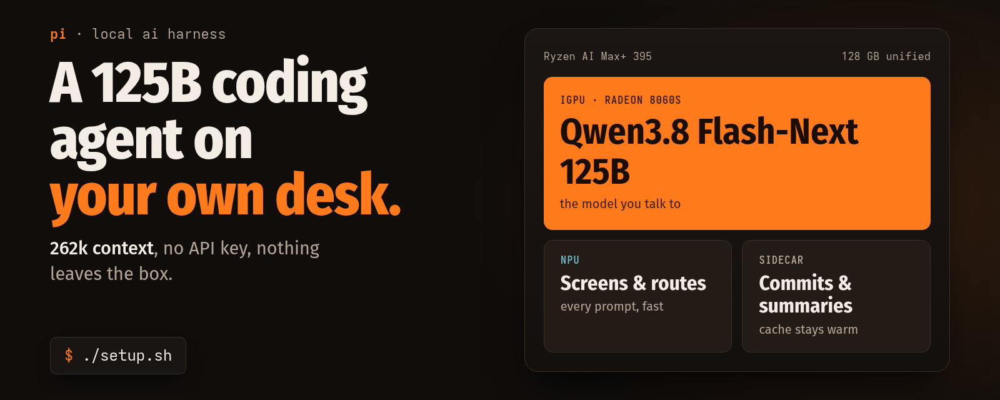

Run a coding agent on whatever you have. It works with any OpenAI-compatible engine (llama.cpp, vLLM, Ollama, LM Studio, Strata) or a cloud model. On a Ryzen AI Max+ 395 it runs a 125B Qwen3.8 Flash-Next on the iGPU with 262k context, while NPU models screen and route prompts and a sidecar writes commits and summaries. Built on pi.
Source on GitHub · Releases · Windows setup · Local vs cloud comparison

Install steps, the full stack and the evidence are in the README.